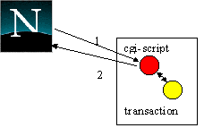
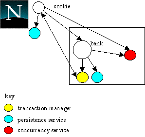
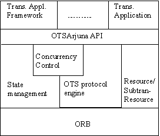
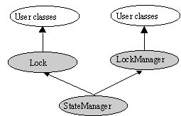
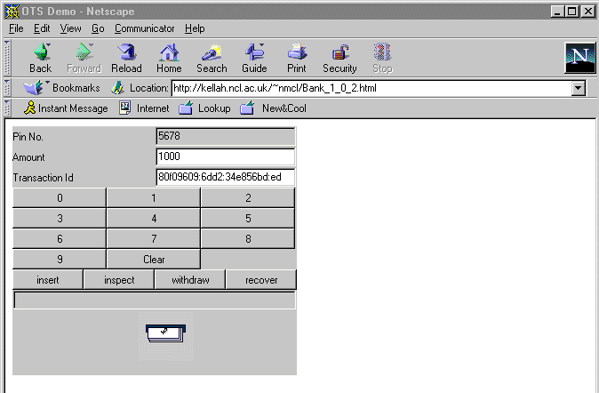

Atomic transactions, with their "all-or-nothing" property, are a well-known technique for guaranteeing application consistency in the presence of failures. Although Web applications exist which offer transactional guarantees to users, these guarantees only extend to resources used at Web servers, or between servers; clients (browsers) are not included, despite their role being significant in applications such as mentioned previously. Providing end-to-end transactional integrity between the browser and the application (server) is therefore important, as it will allow work involving both the browser and the server to be atomic. However, current techniques based on cgi-scripts cannot provide end-to-end guarantees [1]. As illustrated in figure 1 the user selects a URL which references a cgi-script on a Web server (message 1), which then performs the transaction and returns a response to the browser (message 2) after the transaction has completed [2]. Returning the message during the transaction is incorrect since it may not be able to commit the changes.

Figure 1: transactions through cgi-scripts
In a failure free environment, this mechanism works well. However, in the presence of failures it is possible for message 2 to be lost between the server and the browser, resulting in work at the server not being atomic with respect to any browser related work.
With the advent of Java it is possible to empower browsers so that they can fully participate within transactional applications. To be widely applicable any such transaction system must be standards compliant. The most widely accepted standard for distributed transactions is the Object Transaction Service (OTS) [3]. However, rather than require a browser to incorporate a full OTS implementation for all applications, we are interested in the case where it would be considered either undesirable or impractical, e.g., because of the overhead and security implications involved in incorporating the required CORBA services within a browser. In addition, we expect that the majority of an application’s resources, particularly in the area of electronic commerce, will continue to reside within protected domains.

Figure 2: lightweight transactional browser
In the following sections we shall describe how we have provided this lightweight transactional mechanism using the OTS.
Although this browser Resource will typically be specific to the application for which it was created, the functional requirements all such Resources must fulfil will be the same:
Rather than require programmers to make use of the low-level OTS, concurrency control and persistence APIs, OTSArjuna provides a high-level API for building transactional applications and frameworks [5]. This API automates the activities concerned with participating within an OTS transaction, such as creating and registering appropriate Resource implementations, propagating locks etc. The architecture of the system is shown in figure 3.

Figure 3: OTSArjuna structure
The OTSArjuna model for building transactional applications exploits object-oriented techniques to present programmers with a toolkit of classes from which application classes can inherit to obtain desired properties, such as persistence and concurrency control. Each class is concerned with a single functionality, and these classes form a hierarchy, part of which is shown in figure 4. By inheriting from LockManager, user classes are automatically transactional, with LockManager and StateManager being responsible for guaranteeing the ACID properties (isolation and durability respecitvely). Apart from specifying the scopes of transactions, and setting appropriate locks within objects, the application programmer does not have any other responsibilities: the system guarantees that appropriate Resource objects are registered with transactions, and that in the event of failures crash recovery mechanisms are invoked automatically.

Figure 4: OTSArjuna class hierarchy

Figure 5: Bank applet.
Figure 5 shows the browser portion of the application, consisting of a Java applet which displays a graphical representation of the bank; user accounts are accessed via a PIN. To guarantee consistency in the presence of failures, each operation is performed within the scope of a transaction; the transaction manager runs at the bank’s Web server. Although the operation to inspect an account is transactional, it only reads the state of the account and therefore there is no actual requirement for end-to-end transactional integrity: if a failure occurs, the user can simply re-issue the request. However, both withdrawing and inserting money require stronger transactional guarantees: each operation must atomically modify the account and either deposit or consume a digital cash token to/from the browser.
During the prepare phase of each transaction the applet will display the unique transaction identifier for the operation. During the commit phase, the bank server will return the digital cash token to the browser and the applet can then use this to animate (e.g., money appears to be dispensed). In a real system the token would need to be stored by the browser. If the transaction aborts, an error message will be displayed giving the reason, e.g., insufficient funds.
enum Outcome { DONE, NOTDONE, INSUFFICIENT_FUNDS, ACCOUNT_ERROR, LOCKED };
class Account : public LockManager
{
public:
Account ();
virtual ~Account ();
void insert (int amount); void withdraw (int amount); void inspect (int& amount);
private: int amount; };We shall first show the implementation of the withdraw method without browser participation. We will then describe the necessary browser Resource for end-to-end transactional guarantees, and return to the withdraw operation to show how it requires modification in order to incorporate this Resource. The withdraw method first starts a new transaction and then attempts to obtain a lock on the account object (by calling the setlock method of the LockManager class). Because the withdraw operation will modify the state of the account, it tries to obtain an exclusive (write) lock. If the operation is performed successfully (e.g., there is sufficient funds in the account), the transaction is committed, otherwise it is rolled back. (Note: for simplicity the code fragments shown do not perform all necessary error checking.)
void Account::withdraw (int money)
{
Outcome result = NOTDONE;
OTS::get_current().begin();
if (setlock(new Lock(WRITE)) == GRANTED)
{
/*
* Check whether the user has sufficient
* money to withdraw.
*/
if (amount >= money)
{
amount = amount - money;
result = DONE;
}
else
result = INSUFFICIENT_FUNDS;
}
else
result = LOCKED;
if (result == DONE)
OTS::get_current().commit(TRUE);
else
OTS::get_current().rollback();
}
In order to involve the browser such that it can receive the cookie when
the user’s account is finally debited, we need to create an instance of
a specific Resource which will encapsulate
the browser for the duration of the transaction. The signature of the BrowserResource
is shown below.
class BrowserResource : public CosTransactions::ResourceBOAImpl
{
public:
BrowserResource (CosTransactions::otid_t tran, int outcome, CashToken& amount);
virtual ~BrowserResource ();
CosTransactions::Vote prepare (); void rollback (); void commit (); void forget (); void commit_one_phase ();
private: Boolean saveState (); Boolean restoreState (); void removeState ();
int opOutcome; CashToken cashAmount; CosTransactions::otid_t tid; Browser applet; // our handle on the browser side of the application. };When created, each BrowserResource is given the identity of the transaction it has been registered with, so that it can transmit it to the browser during the prepare phase; this can be used in the event of a failure. The Resource also receives the outcome of the operation and the cash token to send back to the browser. The browser applet is represented to the resource by an instance of the Browser class; this is simply a traditional client proxy for a corresponding object within the browser.
To make the browser transactional, the BrowserResource must keep a durable record of its progress; this may then be used by crash recovery in the event of a failure. For example, consider the implementation of the prepare method:
CosTransactions::Vote BrowserResource::prepare ()
{
if (!saveState())
return CosTransactions::VoteRollback;
// invoke operation on browser
if (applet->prepare(tid))
return CosTransactions::VoteCommit;
else
{
// Failure - discard Resource’s state
removeState();
return CosTransactions::VoteRollback;
}
}
Before the BrowserResource sends the transaction’s
identity it calls saveState which will
permanent sufficient information to allow its role in the transaction to
be replayed in the event of a failure. If saveState
fails, the transaction must abort. If the subsequent invocation on the
browser proxy fails, the resource assumes that the browser has failed,
removes any state it previously saved, and forces the transaction to rollback.
If no errors occur during prepare, the
resource informs the transaction coordinator that it is ready to commit.
During the commit phase, the Resource sends
the token to the browser and awaits an acknowledgement. If no acknowledgement
is received, the Resource relies upon crash
recovery mechanisms to complete its work.
void BrowserResource::commit ()
{
// browser acknowledged receipt
if (applet->commit(cashAmount))
{
removeState();
}
else
{
// Some failure has occurred (browser, network).
// Crash recovery will have to deal with this.
}
}
In the event of a rollback the resource will send an error message to the
browser indicating the reason for the failure.
void BrowserResource::rollback ()
{
removeState();
/*
* Send reason for failure. If this fails, the
* browser will try again later, and be told
* the transaction rolled back.
*/
applet->rollback(reason);
}
If a failure occurs during the transaction, the user can re-issue the request
by supplying the transaction identifier. The crash recovery mechanisms
at the server will determine the transaction outcome and complete the work.
If no record of the transaction can be found it can be assumed that the
transaction aborted.
Having considered the implementation of the BrowserResource, we can return to the withdraw operation. We wish to incorporate the browser within the transaction before it terminates, such that the browser will be informed of the outcome regardless of whether the transaction subsequently commits or rolls back. Therefore, after performing withdrawal we obtain a reference to the current transaction’s Coordinator, and register a new instance of the BrowserResource with it. The transaction then either commits or aborts, depending upon whether the withdrawal was successful, and drives the BrowserResource to either deliver a token or an error message, respectively. If a failure occurs, the user’s account will not be debited and neither will the browser obtain a cash token.
void Account::withdraw (int money)
{
Outcome result = NOTDONE;
OTS::get_current().begin();
if (setlock(new Lock(WRITE), 0) == GRANTED)
{
if (amount >= money)
{
amount = amount - money;
result = DONE;
}
else
result = INSUFFICIENT_FUNDS;
}
else
result = LOCKED;
/* * Now involve the browser within the transaction. */
Control_ptr cont = OTS::get_current().get_control(); Coordinator_ptr coord = cont->get_coordinator(); BrowserResource res = new BrowserResource(OTS::get_current(), result, money);
coord->register_resource(res);
if (result == DONE)
{
// automatically aborts if it cannot commit
OTS::get_current().commit(TRUE);
}
else
{
// undo all work performed
OTS::get_current().rollback();
}
}
As can be seen by comparing the new withdraw
with the old, the changes (shown in italics) to an application necessary
to incorporate a non-transactional browser into its operations are minimal.
Therefore, this technique also offers possibilities for integrating Web
browsers within existing legacy applications. Changes to the other operations
to make them transactional with respect to the browser are similar.